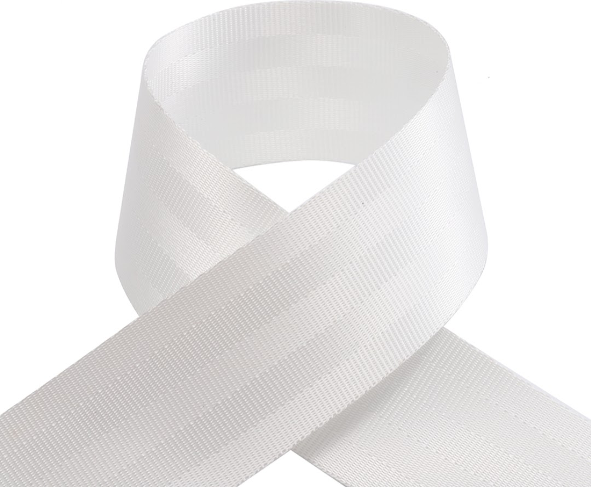
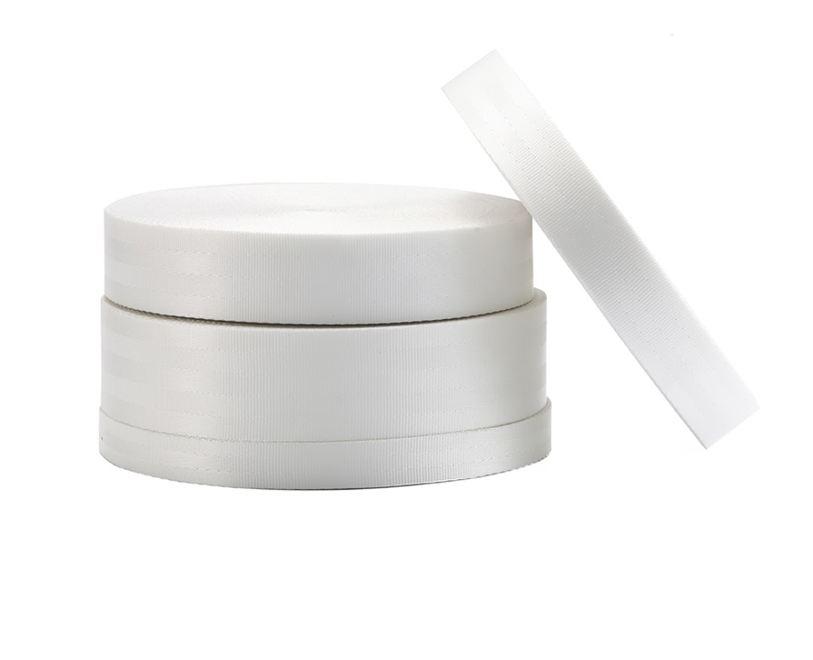
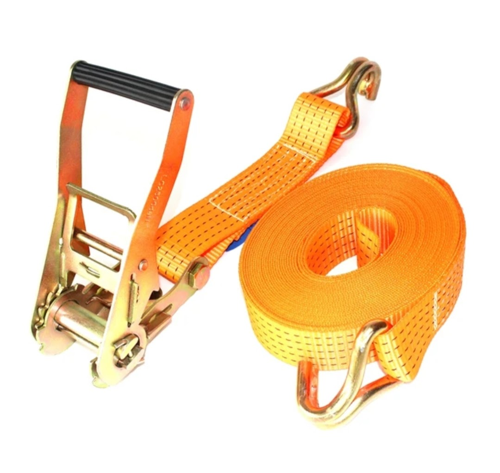
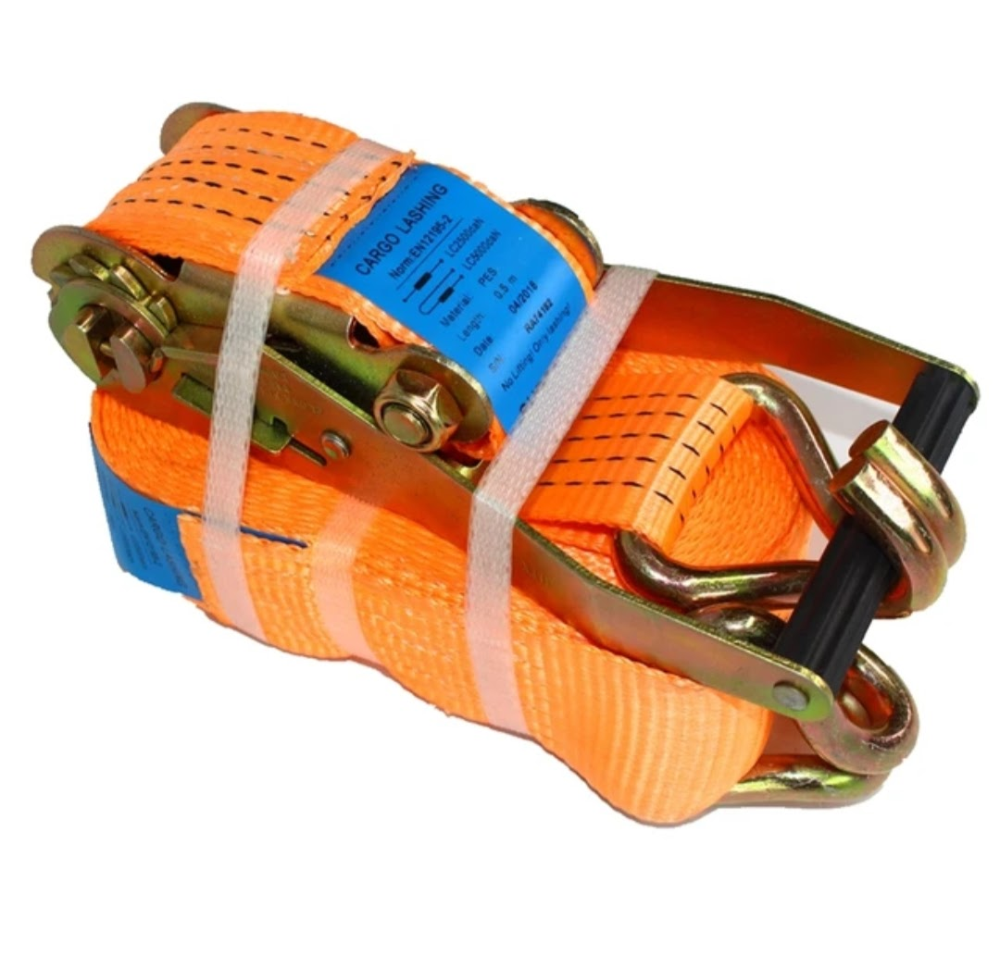
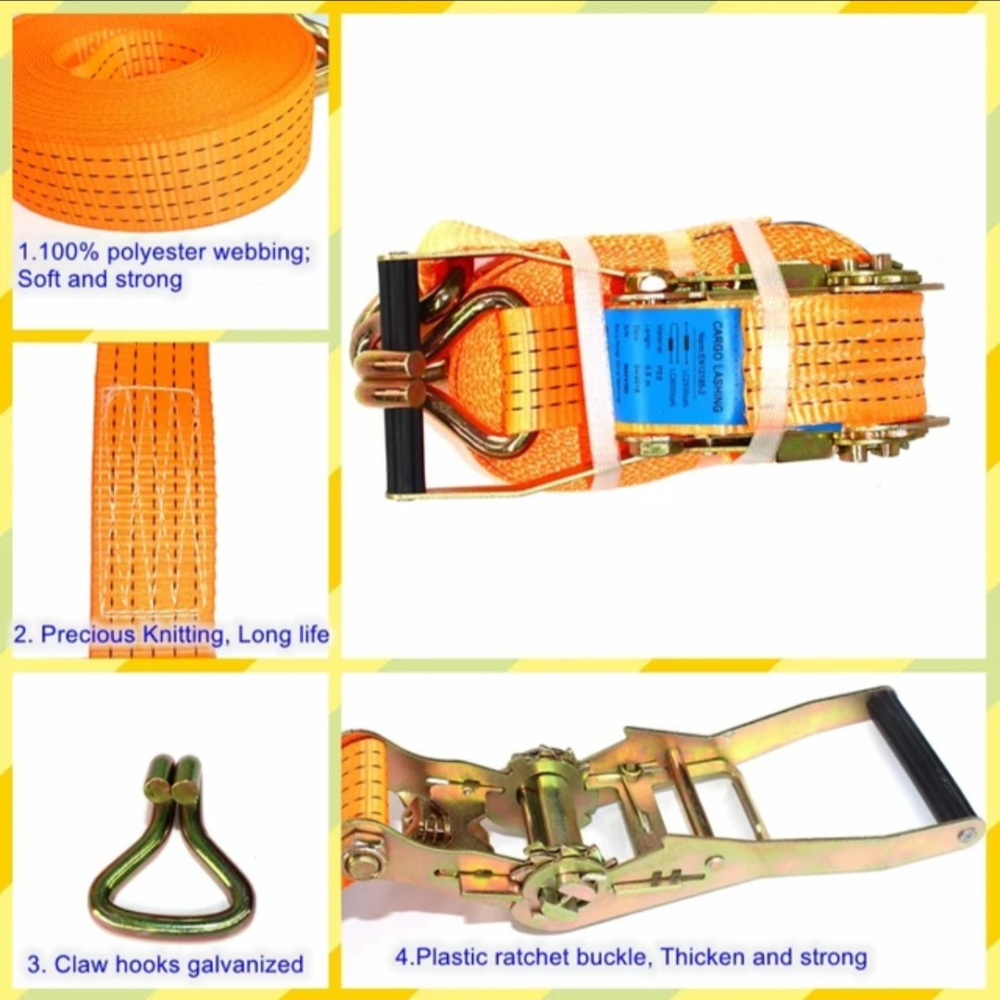
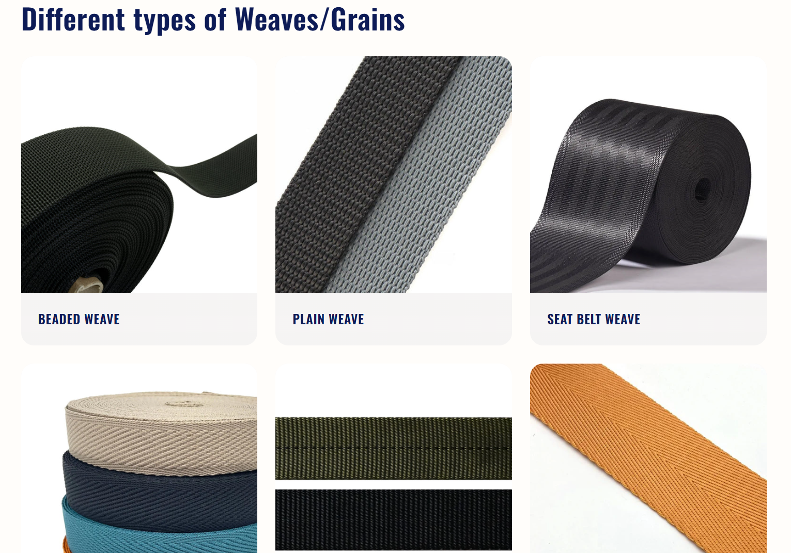
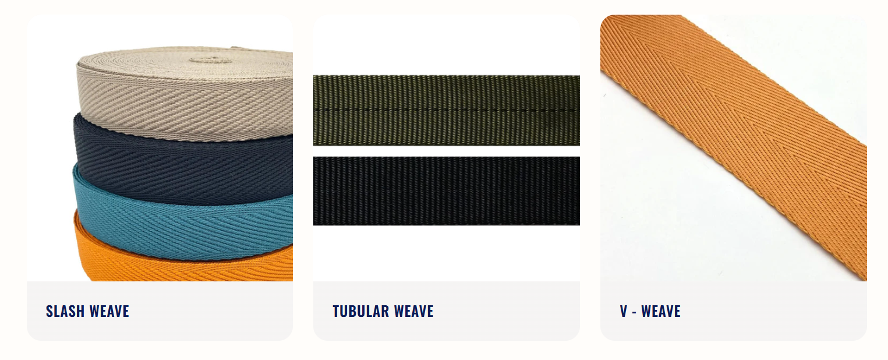
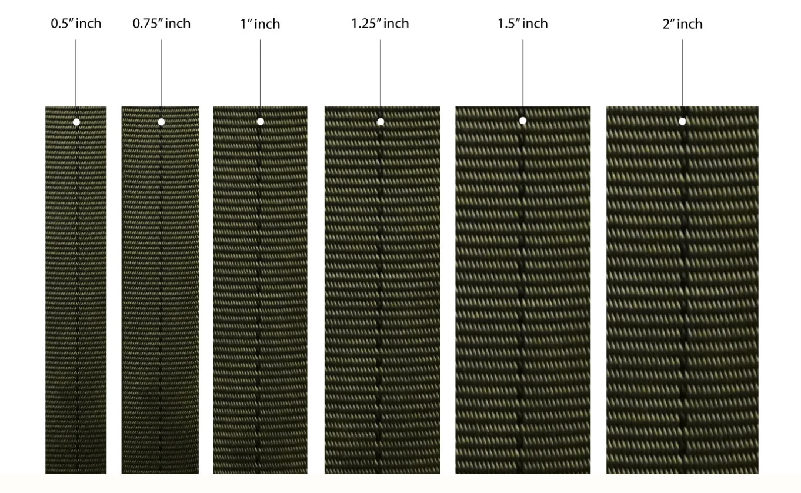

High-strength webbing and lashing belts engineered for secure
load restraint, cargo fastening, and safe transportation.








Product Overview
Webbing Belts, also known as Lashing Belts, are load-securing
systems manufactured using high-tenacity polyester webbing
and metal fittings for safe cargo restraint.
These belts are widely used in transport, logistics, and
industrial applications to prevent load movement, shifting,
and damage during transit.
Key Features
High tensile strength polyester webbing
Excellent resistance to abrasion and wear
Strong metal ratchet or cam buckle options
Reusable and easy to operate
Improves transport safety and load stability
Specifications
Material: Polyester webbing
Buckle Type: Ratchet / Cam buckle
Width: Multiple widths available
Length: Standard and custom lengths
Usage: Cargo lashing and load securing
Applications & Use Cases
Truck and trailer load securing
Logistics and cargo transport
Warehouse pallet restraint
Industrial equipment fastening
Export and container lashing
Best Suited For
Transporters and fleet operators
Logistics and freight companies
Manufacturing and industrial units
Exporters and cargo handlers
Selection Note
For Indian transport conditions, webbing belt width and
breaking strength should be selected based on cargo weight
and vehicle type. Ratchet belts are recommended for heavy
loads and long-distance transport, while cam buckle belts
suit lighter and quick-release applications.
Commonly Used Along With
Tarpaulin Sheets and Covers
Corner Protectors and Edge Guards
Pallets and Cargo Dunnage
Ready to order or need more details?Send us your requirement directly on WhatsApp — we respond within minutes.
What is a webbing or lashing belt used for?
Webbing belts are used to secure cargo during transport
and storage, preventing load movement and damage.
What is the difference between ratchet and cam buckle belts?
Ratchet belts provide higher tension and are suitable
for heavy loads, while cam buckle belts are ideal for
lighter loads and quick fastening.
Are lashing belts reusable?
Yes. Lashing belts are reusable and designed for repeated
use when properly maintained and inspected.
Are these belts suitable for Indian road transport?
Yes. Webbing and lashing belts are widely used across
Indian transport and logistics operations.
How do I choose the correct belt strength?
Belt selection should be based on cargo weight, number
of belts used, and safety factors recommended for load
restraint.
Are custom lengths and bulk supplies available?
Yes. Webbing belts can be supplied in custom lengths,
strengths, and bulk quantities for commercial buyers.